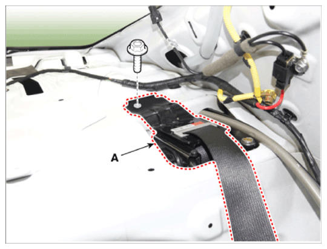
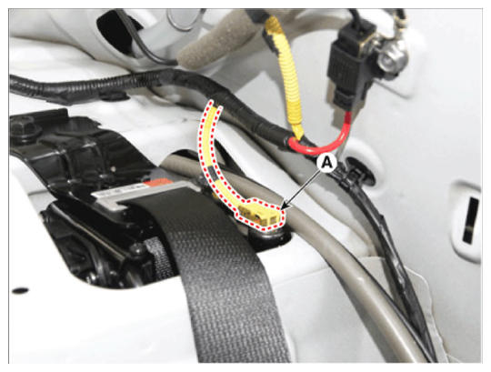

LEMON Manuals
: Even more car manuals for everyone: 1960-2025
Home
>>
Hyundai
>>
2022
>>
Elantra N Line, Standard Trans
>>
Repair and Diagnosis
>>
Restraints
>>
Passive Restraints
>>
Seat Belt PRETENSIONER (Except HEV)
>>
Seat Belt Pretensioner (BPT)
>>
Repair Procedures
>>
Installation
>>
Rear Seat Belt Pretensioner (BPT)
Rear Seat Belt Pretensioner (BPT)
Tighten the mounting bolt and install the rear seat belt pretensioner (A).

Courtesy of HYUNDAI MOTOR AMERICA
Connect the airbag connector (A).

Courtesy of HYUNDAI MOTOR AMERICA
To install, reverse the removal procedures.
NOTE:
Turn the ignition switch ON the airbag warning lamp should be turned on for about 6 seconds and then go off.